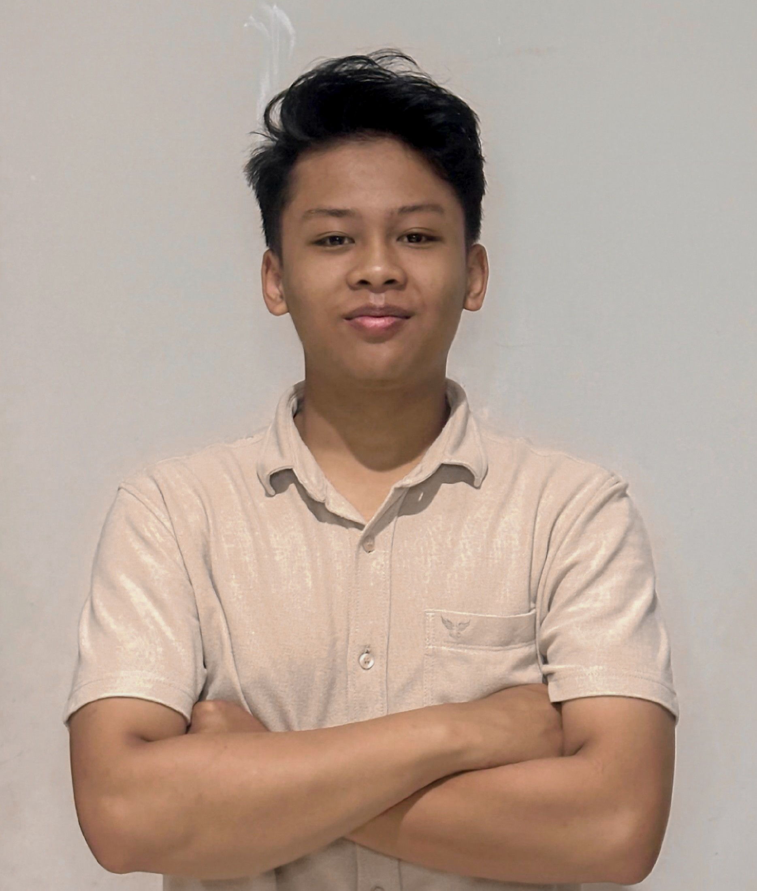

082245013945 | asfazaghi123@gmail.com
LinkedIn: linkedin.com/in/asfa-ghazali-530a48232
| Profil | |
| Mahasiswa S1 Sistem Informasi Universitas Brawijaya dengan minat pada komunikasi sosial, public speaking, teknologi informasi, media digital, dan manajemen acara. Memiliki pengalaman dalam kepanitiaan, broadcast, serta dokumentasi acara. | |
| Pendidikan | |
| 2025 - Sekarang | S1 Sistem Informasi - Universitas Brawijaya |
| 2022 - 2025 | SMAIT Ibnu Abbas Klaten (IPA) |
| Pengalaman Organisasi | |
| OSIS Media & Jurnalistik | 2022 - 2024 |
| Kepala Divisi Media Dokumentasi | Kajian Remaja Islam (2023 - 2024) |
| Kepala Tim Broadcast | Ibaska Festival (2024) |
| Kepala Tim Broadcast | Lailatul Wada' (2025) |
| Ketua Pelaksana | Acara Perpisahan SMA (2025) |
| Mentor SNBT | Ibaska Fushilat Back to School (2026) |
| Divisi Media & Creative | Ramadhan Brawijaya (2026) |
| Staff Ahli Humas | Unit Aktivitas Kerohanian Islam UB (2026) |
| Prestasi | |
|
|
| Sertifikasi | |
| Sertifikat Tahfidz Hafalan 15 Juz Teruji | |
| Keahlian | |
| Teknis | Editing Video, Broadcast, Fotografi, Videografi |
| Non Teknis | Kepemimpinan, Komunikasi, Kerja Tim |
| Software | Microsoft Office, Adobe Lightroom, OBS Studio, V-Mix, Capcut, Filmora |
| Hobi & Minat | |
| Olahraga, Editing, Fotografi, Videografi, Broadcast, Kegiatan Sosial, Public Speaking | |